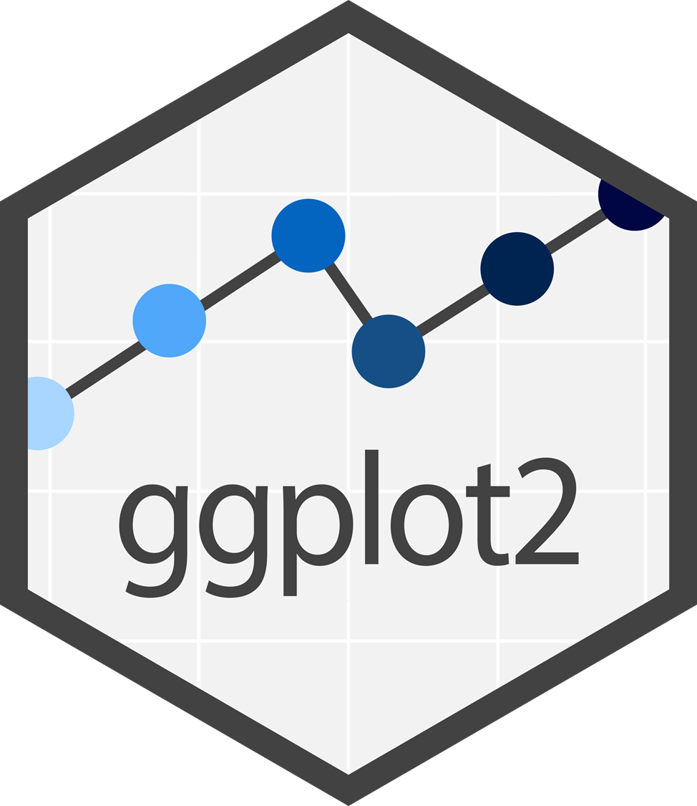
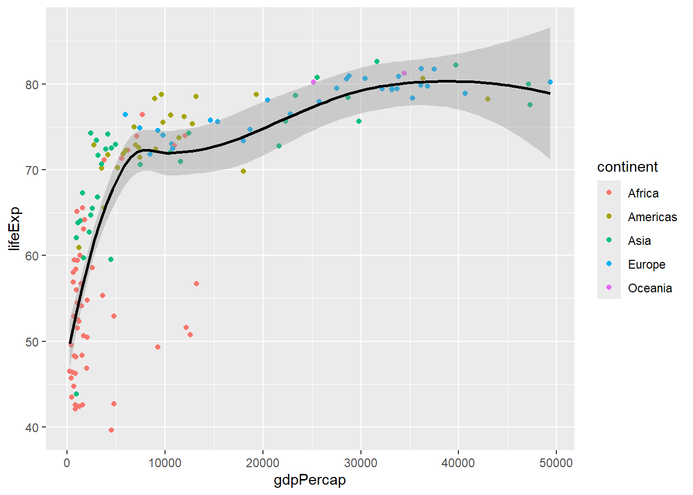
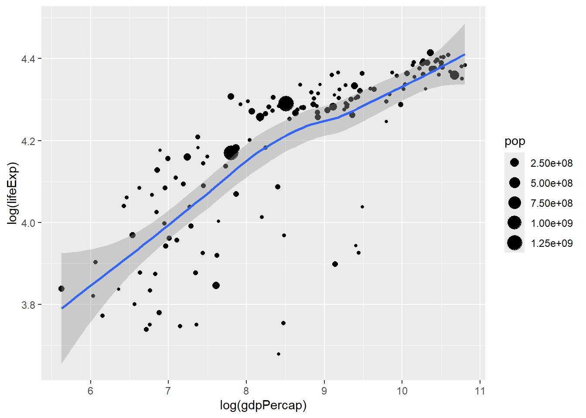

gapminder |>
filter(year == 2007) |>
ggplot(aes(x = gdpPercap, y = lifeExp)) +
geom_point(aes(color = continent)) +
geom_smooth(color = "black")R Lecture 6
데이터 시각화하기
데이터 시각화하기
Basic Concepts
A data science process with R: 4th step

ggplot2 package

Grammar of graphics

Eight components of ggplot2
Core Components
Aesthetics & Geometries
심미성(aesthetics) 혹은 심미성 매핑(aesthetic mapping)
그래프의 외견을 규정
시각 변수 혹은 속성: color, size, shape 등
기하(geometries) 혹은 기하 객체(geometric objects)
그래프의 전체 구조 혹은 형식을 규정
그래프의 유형: bar chart, line chart 등
Aesthetics & Geometries

Aesthetics
x-axis, y-axis
color, fill
shape
size
alpha
position
Geometries
geom_point()geom_line()geom_bar(), geom_col()geom_histogram(), geom_density()geom_smooth()geom_boxplot(), geom_violin()geom_text(), geom_label()
Other Components
Scale
심미성의 구체적 구현
x-axis, y-axis
scale_x_continuous(),scale_x_discrete()
color and fill
scale_color_brewer(),scale_fill_brewer()scale_color_manual(),scale_fill_manual()
others
scale_shape(),scale_size()scale_linetype(),scale_linewidth()
Facet
다면생성(faceting) 과정을 통해, 하나의 플롯을 여러 개의 하위 플롯으로 분할
두 가지 중요 함수
facet_wrap()facet_grid()
Facet


Statistical transformation

Coordinates
그래픽 요소들의 위치 결정에 기준이 되는 준거 체계
두 가지 중요 함수
coord_flip()coord_fixed()
Theme
그래프의 전체적인 외양(테마)를 수정
- 8개 테마 제공
그래프의 세부 구성 요소를 수정
theme()
Theme

Theme
수 많은 옵션 https://ggplot2.tidyverse.org/reference/theme.html
axis 관련
legend 관련
plot.title 관련
ggplot2 Extensions
https://exts.ggplot2.tidyverse.org/
Major extensions
patchworkggplotlygganimateGGallyggcorrplottidyterra